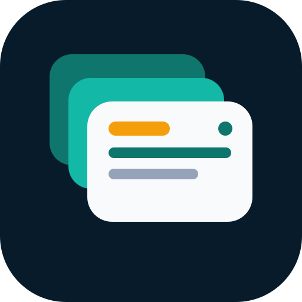

DESKTOP COMPANION
Session bridge
Preserve native groups while sending tabs to Android.
Android bridge connection
TabDeck accepts loopback only. Use an explicit ADB port forward to 127.0.0.1:48721, and stop the bridge after use.
Reading browser session…